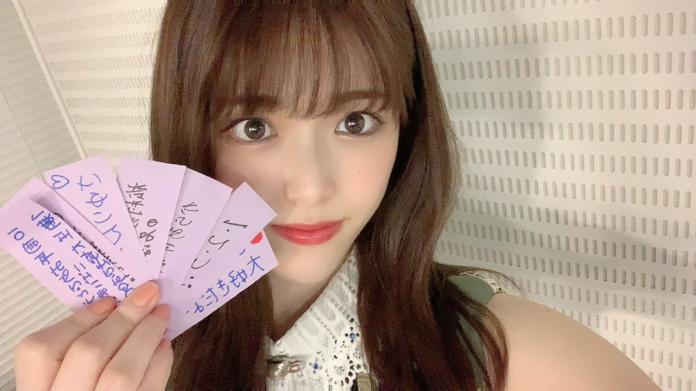

2021/0705Mon"これが最後"が多くなってっ(o・・o)
松村沙友理です

そろそろわたしの卒業が近づいて参りました！
卒業コンサートも無事に終わりました！
卒業コンサートはどの曲にも思い入れがあるので
ゆっくり書いていきたい...気持ちです。
今回はある日の私の心境を
ただつらつらと書きたいと思います
卒業を間近にした一人のアイドルの
なんて事ない記録だと思って適当に読んでもらえたら嬉しいです。
先日のTHE MUSIC DAYさんで
乃木坂46としてパフォーマンスするのは最後でした！
これまでも沢山の音楽番組で
私の卒業に触れて頂いて
花束なんか貰っちゃって
私は 自分の気持ちを話す時間を貰えたり
私なんかの為にお花まで用意してくださる事が
ただただ嬉しくて 心からの幸せを感じていました。
だからどの番組でもニコニコと
わーい♡はっぴー♡で過ごしていましたが
ついに本当の最後の日がきました。
私が大好きなメンバーと一緒に
歌って踊って笑い合える最後の日
メイクをしている時も
楽屋でみんなで番組を見ている時も
自分の出番を袖で待っている時も
何をしていても全てに最後だという
実感が湧いてきて
気を抜いたら泣いちゃうなと
ずっと涙を堪えていました。
泣いても良かったんじゃない？と
ファンの皆さんは言ってくれそうだけど
ただ泣くのが恥ずかしかったんです。笑
私の変な照れ隠しだったのかもしれません。
いつも通り終わりたかったのかもしれません。
メドレーが始まる前に
ぐるぐるカーテンのポジションに着いて
かっきーと久保ちゃんに挟まれて
「この二人に挟まれたら歌も上手に歌えそう〜♡」なんて冗談を言って後輩を困らせている時も
ずっとずっと
涙を我慢していました。
メドレーが始まると
不思議と涙は出なくって
このまま終わるのだと思ったら
ラストの曲
"ごめんねFingers crossed"
紙吹雪がスタジオに舞って
「お祝いメッセージが書かれています」のカンペを持ったスタッフさん
なんだろうと思って
紙を拾ってみると
"さゆりんご大好きだよー！"
"さゆりんお疲れさま"のメッセージ
今まで我慢していたものが
溢れでそうになりました。
スタジオ中に舞う沢山のメッセージ
書かれているりんごの絵
これはもう無理だ〜と思いながらも
泣かないと決めていたので
頑張って笑っていると
いくちゃんが
"これ！"と渡してくれた紙には
"軍団永久不滅！！"の文字
そして、私が持っていた紙には
"からあげ姉妹"の文字
手書きのメッセージ一枚一枚が
私にとって最高のサプライズでした。
本当に嬉しくて嬉しくて
生放送だから急いでステージを
おりながら 何枚か拾ってきました。
そしてそのメッセージを握りしめて
帰り道一人で静かに泣きました。
これが私が最後にパフォーマンスした日の記録です。

今回はゴミと間違えて捨てたりはしません。笑
2021/07/05 20:30
コメント(1449)
まちゅ…………………寂しいよ
でも、ずーっと応援し続けます。
アイドル貫いて下さい！
でも、ずーっと応援し続けます。
アイドル貫いて下さい！
おはようございまっちゅん！！
昨日は写真集発売記念SR配信お疲れさまっちゅん
めっちゃめっちゃ楽しかったよー«٩(*´ ꒳ `*)۶»ﾜｸﾜｸ
冷や汁やら地鶏やらチキン南蛮やら美味しそうでしたね！！
まちゅって本当に美味しそうに食べるし、その食べてる姿が本当に可愛いですね(∩˃o˂∩)♡
食べてる姿を見てるだけで本当に幸せな気持ちになりました♡♡♡♡
SR限定特典のポスターに長文メッセージ書いてあるの楽しみです！！！！
まちゅ熱意ありがとうございまっちゅん！！
今日も配信してくれてありがとうございまっちゅん！！
本当に楽しみです(*ˊᵕˋ*)੭ ੈ❤︎
今日は写真集持って画面の前に集合だね♪♪
プロミスシンデレラの第1話もホンマに楽しみです！！
写真集もホンマに楽しみです！！
お仕事色々とお忙しいとは思いますが、時間を割いてくれてホンマにありがとうございまっちゅん！！
アイドルとして最後の松村沙友理ちゃんの配信、全力で楽しみたいと思います«٩(*´ ꒳ `*)۶»ﾜｸﾜｸ
今日も宇宙で一番可愛いまちゅの笑顔満開の一日でありますように！！(๑•ω•๑)♡
ではでは、お互いお仕事頑張り〜まっちゅん(*」>д<)」ォｰｰ!
でいきましょう！！
ではでは、またね！！
たっかんより
写真集
発売おめでとう
発売おめでとう
さゆりちゃ
《
届いたよぉ
跳び上がる程
特典には、
西瓜を持ってるさゆりん
《私とあなた
二人の想い出がいっぱいだね♡
みてくれて ありがとう
会えなくなると寂しいよ…。
次、また会えるよね?》
メッセージも嬉しいっっ
ゆっくり、じ
さゆりんのブログ、いつ
閉鎖されるのか分からないんだけど
今月いっぱいは
閉鎖しないで欲しいなっ
写真集の感想を書きたいから
あぁ
楽しみっ
ワクワク、ドキドキして来るっ
まっちゅん、ついに乃木坂として本当に最後の日が来てしまいましたね。。
まだSHOWROOM配信があるから、ちょっと早いけれど、、
卒業おめでとう！
そして、今までありがとう〜
はーちゃん（賀喜遥香ちゃん）が、まっちゅんの事をブログに書いてくれていて、卒コン楽しかったって！
メンバーの事も楽しませちゃう素敵なライブをありがとう。
今日のSHOWROOMも絶対見ますね！
写真集「次、いつ会える？」、今日2冊買ってきたよー！
まだ内容を全部見れてないけれど、SHOWROOM配信までに見ます！
プロミス・シンデレラ 観るね！
録画予約もバッチリです。
...あと、何を伝えたらいいかな。。
あと数時間で、乃木坂のまっちゅん ではなくなっちゃうのが名残惜しいけれど、、悲しい気持ちではなく、今はちゃんと前を向いてます！
まっちゅんの、これからの活躍を楽しみにしてますね
これから歩む道での、まっちゅんの幸せを願ってます
お疲れ様でした。
じゃあね〜
まだSHOWROOM配信があるから、ちょっと早いけれど、、
卒業おめでとう！
そして、今までありがとう〜
はーちゃん（賀喜遥香ちゃん）が、まっちゅんの事をブログに書いてくれていて、卒コン楽しかったって！
メンバーの事も楽しませちゃう素敵なライブをありがとう。
今日のSHOWROOMも絶対見ますね！
写真集「次、いつ会える？」、今日2冊買ってきたよー！
まだ内容を全部見れてないけれど、SHOWROOM配信までに見ます！
プロミス・シンデレラ 観るね！
録画予約もバッチリです。
...あと、何を伝えたらいいかな。。
あと数時間で、乃木坂のまっちゅん ではなくなっちゃうのが名残惜しいけれど、、悲しい気持ちではなく、今はちゃんと前を向いてます！
まっちゅんの、これからの活躍を楽しみにしてますね
これから歩む道での、まっちゅんの幸せを願ってます
お疲れ様でした。
じゃあね〜
松村沙友理さん
乃木坂46ご卒業おめでとうございます!
乃木坂46を初めて知った時可愛いと思ったのが松村さんでした!
私はコメント欄に投稿したファンの人たちと比べて、握手会やライブに行ったことは無く松村さんや他のメンバーが表紙やインタビューが掲載された本や雑誌・写真集を買うぐらいしか応援出来なかったのでファンとは言えないかもしれません。
しかし松村さんがいたおかげで乃木坂46を好きになったことは紛れもない事で他のメンバーも好きになっていきました！
松村さんが卒業でいなくなるのは寂しいですが、私は松村さんが残した活躍や頑張りが全メンバーにレガシーとして残って乃木坂46の発展に繋がっていくと思っています！
ちなみに私の地元では卒業記念の写真集がまだ販売されてないので本屋で予約しました。とても楽しみです！
最後ですが、松村沙友理さん。
これからの活躍を期待しています！
ご卒業おめでとうございます！
乃木坂46にいてくれてありがとうございました!
乃木坂46ご卒業おめでとうございます!
乃木坂46を初めて知った時可愛いと思ったのが松村さんでした!
私はコメント欄に投稿したファンの人たちと比べて、握手会やライブに行ったことは無く松村さんや他のメンバーが表紙やインタビューが掲載された本や雑誌・写真集を買うぐらいしか応援出来なかったのでファンとは言えないかもしれません。
しかし松村さんがいたおかげで乃木坂46を好きになったことは紛れもない事で他のメンバーも好きになっていきました！
松村さんが卒業でいなくなるのは寂しいですが、私は松村さんが残した活躍や頑張りが全メンバーにレガシーとして残って乃木坂46の発展に繋がっていくと思っています！
ちなみに私の地元では卒業記念の写真集がまだ販売されてないので本屋で予約しました。とても楽しみです！
最後ですが、松村沙友理さん。
これからの活躍を期待しています！
ご卒業おめでとうございます！
乃木坂46にいてくれてありがとうございました!
お疲れ様でした❗️
お体に気をつけて、頑張りまっちゅん❗️
お体に気をつけて、頑張りまっちゅん❗️
㊗️さゆりん卒業おめでとう！
㊗️卒業記念写真集発売
おめでとう！
10年間乃木坂46にいてくれて
ありがとう☺️
「さ～ゆ～Ready？
～さゆりんご軍団ライブ／
松村沙友理 卒業コンサート～」
配信で観たよ！
さゆりんご軍団ライブも
卒業コンサートもさゆりんの想いが
いっぱい詰まった、さゆりんらしい
笑顔がいっぱいで愛に溢れたとっても
楽しい素敵な
最高のライブだったよ☺️
「さ～ゆ～Ready？」
とっても可愛くて明るくて
歌詞が素敵でさゆりんに本当に
ぴったりな楽曲で大好きだよ♪
アップルプリンセス
とっても綺麗で可愛かったよ！
新しいドアを今開いて飛び出す
さゆりんのこれからの活躍を
楽しみにしているよ！
応援しているよ！
さゆりんなら絶対大丈夫！
さゆりんの素敵な未来に幸あれ
㊗️さゆりん卒業おめでとう
ございまっちゅん！
㊗️卒業記念写真集発売
おめでとう！
10年間乃木坂46にいてくれて
ありがとう☺️
「さ～ゆ～Ready？
～さゆりんご軍団ライブ／
松村沙友理 卒業コンサート～」
配信で観たよ！
さゆりんご軍団ライブ
卒業コンサートもさゆりんの想いが
いっぱい詰まった、さゆりんらしい
笑顔がいっぱいで愛に溢れたとっても
楽しい素敵な
最高のライブだったよ☺️
「さ～ゆ～Ready？」
とっても可愛くて明るくて
歌詞が素敵でさゆりんに本当に
ぴったりな楽曲で大好きだよ♪
アップルプリンセス
とっても綺麗で可愛かったよ！
新しいドアを今開いて飛び出す
さゆりんのこれからの活躍を
楽しみにしているよ！
応援しているよ！
さゆりんなら絶対大丈夫！
さゆりんの素敵な未来に幸あれ
㊗️さゆりん卒業おめでとう
ございまっちゅん！
まちゅ☆★タンポポです※。.:*:・'°☆
(。´Д⊂)( ^-^)ノ∠※。.:*:・'°☆
まちゅ、パンダにさゆりんごチョップ
してくれてありがとうm(。≧Д≦。)m
タンポポはぱんだだから
さゆりんごチョップされなかったら
俺が潰れてた！！
最後の最後にまた助けられてん。(。´Д⊂)
ありがとう、タンポポのヒロイン。。
最後の一言！
『まちゅはタンポポの人生のヒロインだよ！！』
写真集、今胸に抱いてます(。´Д⊂)
開けられないよ～涙
タンポポでした(。´Д⊂)
まちゅ。
今日で乃木坂のまちゅは最後なんだなぁ。
実感無い。
まぁ、まちゅなら狂気をはらんだ女優さんでやっていけるだろうから心配はないんだ。
だからという訳でもないんだけど、緊張感なくて申し訳ないんだが、今日は俺の誕生日でもある。
そして別れの得意日なんだよ。シンザンの命日でもある。
話がそれた。
なんでもいいや。
終わりは次の始まり。
アイドル松村沙友理から次のステージへ。
さぁ。行こうか。
色々あったけど、応援していて楽しいアイドルだったぞ。
ありがとうな。
今日で乃木坂のまちゅは最後なんだなぁ。
実感無い。
まぁ、まちゅなら狂気をはらんだ女優さんでやっていけるだろうから心配はないんだ。
だからという訳でもないんだけど、緊張感なくて申し訳ないんだが、今日は俺の誕生日でもある。
そして別れの得意日なんだよ。シンザンの命日でもある。
話がそれた。
なんでもいいや。
終わりは次の始まり。
アイドル松村沙友理から次のステージへ。
さぁ。行こうか。
色々あったけど、応援していて楽しいアイドルだったぞ。
ありがとうな。
松村 沙友理様へ
まっちゃん！ 写真集買ったよ！
我が家の家宝にします蔵書にします！
本当にどうも有難う！
卒業は、新しい未来へのスタートでもありますよね。
今後も期待していますよ～。
焦らず無理をせずに頑張って下さい！
呉々も御身を御大切に！
今日は、まっちゃんらしい爽やかな笑顔で卒業なさって下さい。
ご卒業おめでとうございます！
こもさんより
まっちゃん！ 写真集買ったよ！
我が家の家宝にします蔵書にします！
本当にどうも有難う！
卒業は、新しい未来へのスタートでもありますよね。
今後も期待していますよ～。
焦らず無理をせずに頑張って下さい！
呉々も御身を御大切に！
今日は、まっちゃんらしい爽やかな笑顔で卒業なさって下さい。
ご卒業おめでとうございます！
こもさんより
こんばんはです。
乃木中観ました
長縄46回本当におめでとうございます。
バナナマンさんとさゆりんの掛け合いが本当に乃木どこからファンでした！
本当に10年間ありがとうございました。
これから、写真集購入します！
乃木中観ました
長縄46回本当におめでとうございます。
バナナマンさんとさゆりんの掛け合いが本当に乃木どこからファンでした！
本当に10年間ありがとうございました。
これから、写真集購入します！
帰り道、書店に寄って写真集を買ってきましたよ。
もったいないからまだ見てません。夜寝る前にゆっくり見る事にします。
この頃は毎夜、乃木坂のCDを順番に聴いています。
アルバムも入れると本当にたくさんの楽曲、どれにも思い入れがたくさんあります。
その思い出のすべてに松村さんがいました。どこにもとびきりの笑顔のまっちゅんがいました。
最後の最後まで「私が」ではなく、「みんなと」を選んでいるまちゅだから、きっとこの写真集も仲良しメンバーとの笑顔が溢れているのだろうな。
長い間本当に楽しませてもらいました。
そしてこれからもずっと楽しませてくださいね。軍団も時々活動記録を見せてくださいね。
かりんちゃんのYouTuberにも顔を出してほしいな。
麻雀覚えてまいやんと花奈ぺろの店から実況番組とか観てみたい。
琴子や蘭世とワイワイアニメやマンガの話をしているところも観たい。
卒業したからこそ出来る事はいっぱいあるし、これからのまちゅの活動を想像するととても楽しみです。
大好きな松村沙友理様、本当に本当にこれまでたくさん楽しませてくれてありがとうございました。
卒業おめでとうございます。
もったいないからまだ見てません。夜寝る前にゆっくり見る事にします。
この頃は毎夜、乃木坂のCDを順番に聴いています。
アルバムも入れると本当にたくさんの楽曲、どれにも思い入れがたくさんあります。
その思い出のすべてに松村さんがいました。どこにもとびきりの笑顔のまっちゅんがいました。
最後の最後まで「私が」ではなく、「みんなと」を選んでいるまちゅだから、きっとこの写真集も仲良しメンバーとの笑顔が溢れているのだろうな。
長い間本当に楽しませてもらいました。
そしてこれからもずっと楽しませてくださいね。軍団も時々活動記録を見せてくださいね。
かりんちゃんのYouTuberにも顔を出してほしいな。
麻雀覚えてまいやんと花奈ぺろの店から実況番組とか観てみたい。
琴子や蘭世とワイワイアニメやマンガの話をしているところも観たい。
卒業したからこそ出来る事はいっぱいあるし、これからのまちゅの活動を想像するととても楽しみです。
大好きな松村沙友理様、本当に本当にこれまでたくさん楽しませてくれてありがとうございました。
卒業おめでとうございます。
まっちゅんーーーー！！！！！！！！！
ついにこの日が来てしまいましたね(T_T)
今日はお寿司買ってきて勝手に個人的にまっちゅんの卒業と今後の益々の御活躍を祝して飲んでいます(^^)/
思い起こせば2013年12月の運動音痴選手権とその時流れていた月の大きさのCMでまっちゅんのこと知って以来、僕のまっちゅん推し歴も数えたら約7年8ヶ月、僕は今年58歳、アラ還みたいな年になりましたが(;^_^A、ずっと、乃木どこ・乃木中、生ドル、弁当少女とか吉本坂といった番組、コンサートはもちろん、Fill-in、犬天、じょしらくといった舞台、クリオネやSNSポリスといった声優のお仕事、東京ワインピープル、そしてモデルさんとしての雑誌やランウェイ等々、まっちゅんの発信するほんとにたくさんの斜め上を行く笑顔とアイディア・企画と、そしてなによりもどんな困難にあってもその時はくじけたとしても必ず立ち上がり立ち向かうガッツ、ど根性等々ものすごく多くのことをもらえたなと、僕の日常、毎日に張り合いや彩があったなと、そして叱咤激励してもらえていたんだなと改めて思います。いくら感謝してもしきれないし、7年8ヶ月ずっとまっちゅん推しであったことは僕の誇りです。
乃木坂を卒業してしまうことで、設楽さんのおっしゃるように”いつもおばかなこと言ってる”バラエティー的なまっちゅんを見る機会が大幅に減ってしまうことはとても寂しいですが、でも今日から新しいドラマも始まるし、シンデレラ・コンプレックスというスピンオフもあるし、女優さんモデルさんとしてのまっちゅんはこれからもたくさんみられるであろうこと、さらにまっちゅんのアイディア発想企画力そういった面を生かしたお仕事は今まで以上に思う存分力を発揮してもらえたら乃木坂のそれを大幅に凌駕する大活躍がみられるのではとものすごく期待しています。10年くらいしたら、10代の子たちが、今をときめく松村沙友理さんていう凄腕プロデューサー、実は若いころは乃木坂にいたんですって！みたいな会話してそうな。
今まで本当に本当にありがとうございました。
もちのろんですがこれからもずっと応援しますよ！！！これからもっともっと頑張ってね――――！！！！！そして当たり前だけどちゃんと幸せになってね！！！！！
ついにこの日が来てしまいましたね(T_T)
今日はお寿司買ってきて勝手に個人的にまっちゅんの卒業と今後の益々の御活躍を祝して飲んでいます(^^)/
思い起こせば2013年12月の運動音痴選手権とその時流れていた月の大きさのCMでまっちゅんのこと知って以来、僕のまっちゅん推し歴も数えたら約7年8ヶ月、僕は今年58歳、アラ還みたいな年になりましたが(;^_^A、ずっと、乃木どこ・乃木中、生ドル、弁当少女とか吉本坂といった番組、コンサートはもちろん、Fill-in、犬天、じょしらくといった舞台、クリオネやSNSポリスといった声優のお仕事、東京ワインピープル、そしてモデルさんとしての雑誌やランウェイ等々、まっちゅんの発信するほんとにたくさんの斜め上を行く笑顔とアイディア・企画と、そしてなによりもどんな困難にあってもその時はくじけたとしても必ず立ち上がり立ち向かうガッツ、ど根性等々ものすごく多くのことをもらえたなと、僕の日常、毎日に張り合いや彩があったなと、そして叱咤激励してもらえていたんだなと改めて思います。いくら感謝してもしきれないし、7年8ヶ月ずっとまっちゅん推しであったことは僕の誇りです。
乃木坂を卒業してしまうことで、設楽さんのおっしゃるように”いつもおばかなこと言ってる”バラエティー的なまっちゅんを見る機会が大幅に減ってしまうことはとても寂しいですが、でも今日から新しいドラマも始まるし、シンデレラ・コンプレックスというスピンオフもあるし、女優さんモデルさんとしてのまっちゅんはこれからもたくさんみられるであろうこと、さらにまっちゅんのアイディア発想企画力そういった面を生かしたお仕事は今まで以上に思う存分力を発揮してもらえたら乃木坂のそれを大幅に凌駕する大活躍がみられるのではとものすごく期待しています。10年くらいしたら、10代の子たちが、今をときめく松村沙友理さんていう凄腕プロデューサー、実は若いころは乃木坂にいたんですって！みたいな会話してそうな。
今まで本当に本当にありがとうございました。
もちのろんですがこれからもずっと応援しますよ！！！これからもっともっと頑張ってね――――！！！！！そして当たり前だけどちゃんと幸せになってね！！！！！
まちゅ☆★タンポポです※。.:*:・'°☆
(。´Д⊂)( ^-^)ノ∠※。.:*:・'°☆
嫌だよぉぉーーーーーーーーー！！！！！！
(ノT△T)ノ
嫌だよぉぉぉぉーーーーーーーーー！！！！
(。´Д⊂)
好きだーーーーーーーーー！！！！！！！
（ ＴДＴ）
これからも、好きでいさせて下さい。。
タンポポでした（ ＴДＴ）
まちゅ。卒業、おめでとう！！
さゆりん、今日で乃木坂46としての活動も終了ですね。
お疲れ様でした。
いつも笑顔のさゆりんは、大変な坂道をいくつもいくつも登っていましたね。色んな思いがあったと思うけど、こちらとしては10年間もさゆりんの笑顔に励まされ、笑って、時には癒されていました。
本当にお疲れ様でした。
この先の人生もタレント活動するみたいなので、応援しますね。
とりあえず一先ず、ご苦労様でした。
そしてありがとうございました。
お疲れ様でした。
いつも笑顔のさゆりんは、大変な坂道をいくつもいくつも登っていましたね。色んな思いがあったと思うけど、こちらとしては10年間もさゆりんの笑顔に励まされ、笑って、時には癒されていました。
本当にお疲れ様でした。
この先の人生もタレント活動するみたいなので、応援しますね。
とりあえず一先ず、ご苦労様でした。
そしてありがとうございました。
あの時に辞めなくてここまで頑張ってきたから最高の形で卒業できたんだよ。 たくさんの笑顔と元気を届けてくれて、本当にありがとう。
全力で坂道を登り切った先に、大きな幸せがありますように。
全力で坂道を登り切った先に、大きな幸せがありますように。
ついに、乃木坂46として活動できる最後の日になりましたね。10年間お疲れ様でした。まちゅは辛いことがあってもずっと笑顔で、その笑顔にたくさん励まされました。もちろん、これからもずっと応援します！SHOWROOMも必ず見ます！プロミスシンデレラも必ず観ます！
「過去がどんな眩しくても未来はもっと眩しいかもしれない」
松村沙友理のこれからの未来に幸あれ。
「過去がどんな眩しくても未来はもっと眩しいかもしれない」
松村沙友理のこれからの未来に幸あれ。
さゆりん今まで乃木坂にいてくれてありがとう！
笑顔がかわいいさゆりんに癒されてました！
これからのさゆりんの活躍する姿を楽しみにしてます♪
体調崩さないようにしてくださいね♪
さゆりんのアイドル人生最高でした！
本当にありがとうございまっちゅん♪
笑顔がかわいいさゆりんに癒されてました！
これからのさゆりんの活躍する姿を楽しみにしてます♪
体調崩さないようにしてくださいね♪
さゆりんのアイドル人生最高でした！
本当にありがとうございまっちゅん♪
こんばんは！
正直、乃木中やライブ等で姿を見れなくなるのは非常に寂しいです。
でも、次のステージで活躍するさゆりんごくんの姿が楽しみでもあります！
10年間本当にお疲れ様でした。さゆりんごくんを乃木坂を通して知ることができ、とても幸せでした！
これからも益々のご活躍お祈りしています！
ありがとうー！！！
正直、乃木中やライブ等で姿を見れなくなるのは非常に寂しいです。
でも、次のステージで活躍するさゆりんごくんの姿が楽しみでもあります！
10年間本当にお疲れ様でした。さゆりんごくんを乃木坂を通して知ることができ、とても幸せでした！
これからも益々のご活躍お祈りしています！
ありがとうー！！！
さゆりちゃん！最後のモバメありがとうございます。
前にも書いたけど、さゆりちゃんのおかげで乃木坂に出会えました。
大好きだよ！これからもよろしくね♪
前にも書いたけど、さゆりちゃんのおかげで乃木坂に出会えました。
大好きだよ！これからもよろしくね♪
まちゅモバメありがとう！
今までたくさんほんとにありがとう♡
まちゅがいたから頑張れたよ！
これからもたくさん応援してるから頑張ってね！
だーいすきっ！
今までたくさんほんとにありがとう♡
まちゅがいたから頑張れたよ！
これからもたくさん応援してるから頑張ってね！
だーいすきっ！
さゆりん！
卒業おめでとうございます
この10年間本当にお疲れ様でした！
いろんなさゆりんを見てきたからこそ
寂しい気持ちもあるけれど、これからのさゆりんの活躍も応援してるからね♥️
大阪でさゆりんのこと待ってるでー！！！
永遠に私のアイドルでいてください♥️
あ い し て る！！！
卒業おめでとうございます
この10年間本当にお疲れ様でした！
いろんなさゆりんを見てきたからこそ
寂しい気持ちもあるけれど、これからのさゆりんの活躍も応援してるからね♥️
大阪でさゆりんのこと待ってるでー！！！
永遠に私のアイドルでいてください♥️
あ い し て る！！！
いつもおつかれさま〜
モバメありがとう！
こちらこそ、沢山のありがとうを本当にありがとう。
そして、こうして乃木坂46としての最後の日もお話できて、すごくありがたいし、嬉しい！
これから楽しみまっちゅん
モバメありがとう！
こちらこそ、沢山のありがとうを本当にありがとう。
そして、こうして乃木坂46としての最後の日もお話できて、すごくありがたいし、嬉しい！
これから楽しみまっちゅん
こんばんは。
Instagramの更新ありがとうございます。
今日は、本屋さんで写真集を購入しました。SHOWROOMのポスター付きも、、素敵な写真集をありがとうございます！
モバメもありがとうございます。やさしさを感じました。楽しく人生を頑張っていきますね。
そして、ドラマ「プロミス・シンデレラ」とオリジナルストーリー「シンデレラ・コンプレックス」の配信も楽しみです。
これからも応援しています。
o(^-^)o
Instagramの更新ありがとうございます。
今日は、本屋さんで写真集を購入しました。SHOWROOMのポスター付きも、、素敵な写真集をありがとうございます！
モバメもありがとうございます。やさしさを感じました。楽しく人生を頑張っていきますね。
そして、ドラマ「プロミス・シンデレラ」とオリジナルストーリー「シンデレラ・コンプレックス」の配信も楽しみです。
これからも応援しています。
o(^-^)o
沙友理さん、こんばんは！
昨夜の写真集発売記念スペシャルSHOWROOM、お疲れ様でした。
そこでのみの限定で、長文メッセージ入り特典ポスター付きバージョンの写真集の案内をして頂き、しかもその場で購入手続きができる仕様だったので(勿論既に別で予約済みでしたが)条件反射のように「購入」ボタンを押してしまいました。(笑)
このように「付加価値を付ければ絶対売れる！」＝「ファンは嬉しくて絶対欲しがる！」ということを理解して下さった上でのプロデュース！
流石だね！
‘‘行動力’’も天下一品だね！
恐れ入りました！
どんなメッセージか、楽しみ、楽しみ。
撮影地の良さやこだわりも普通なら‘言葉で’表現するに留まりそうだけど、どっこい。
美味しものを次から次へと、食べる、食べる、食べまくる。
途中、’’グルメ番組か？‘‘と思うほどでしたよ。(大笑)
これも「ファンは笑顔の推しメンを見ていたい！」
「推しメンは美味しいものを食べると笑顔になる。」
故にグルメ番組化しても結局‘‘WIN&WIN’’となる方程式通りでしたね！
大当たり！！
もはやそのことも’’名プロデューサー‘‘には、すっかりお見通しのようでしたね！？
今夜のSHOWROOMも、楽しみにしてるねーー！！
昨夜の写真集発売記念スペシャルSHOWROOM、お疲れ様でした。
そこでのみの限定で、長文メッセージ入り特典ポスター付きバージョンの写真集の案内をして頂き、しかもその場で購入手続きができる仕様だったので(勿論既に別で予約済みでしたが)条件反射のように「購入」ボタンを押してしまいました。(笑)
このように「付加価値を付ければ絶対売れる！」＝「ファンは嬉しくて絶対欲しがる！」ということを理解して下さった上でのプロデュース！
流石だね！
‘‘行動力’’も天下一品だね！
恐れ入りました！
どんなメッセージか、楽しみ、楽しみ。
撮影地の良さやこだわりも普通なら‘言葉で’表現するに留まりそうだけど、どっこい。
美味しものを次から次へと、食べる、食べる、食べまくる。
途中、’’グルメ番組か？‘‘と思うほどでしたよ。(大笑)
これも「ファンは笑顔の推しメンを見ていたい！」
「推しメンは美味しいものを食べると笑顔になる。」
故にグルメ番組化しても結局‘‘WIN&WIN’’となる方程式通りでしたね！
大当たり！！
もはやそのことも’’名プロデューサー‘‘には、すっかりお見通しのようでしたね！？
今夜のSHOWROOMも、楽しみにしてるねーー！！
今日はまっちゅんの乃木坂としての最後の日なので、もう一度投稿させて頂きたいと思います。
改めまして、ご卒業おめでとうございます。
そして、今日までの乃木坂46としてのご活動本当にお疲れ様でした。
これまでのように歌って踊る姿や、乃木中に出てる姿、そしてメンバーと一緒にいるまっちゅんを見れなくなるのは正直寂しいところもあります。
でも、今日写真集も発売されたし、今日からドラマも始まるし、凄く楽しみです。
寂しくならないようにまっちゅんが用意してくれたプレゼントのようにも感じます。
いつか卒業の日が来るのであれば、最高のタイミングだったような気もします。
卒業発表から今日までも、まっちゅんは全力でアイドルとしての姿を見せてくれました。
番組や文章などでも心に沁みる言葉をたくさんくれました。涙を流す姿もたくさん見せてくれました。
こんな風に思うのは良くないかもしれませんが、素直に言うと、涙を流してくれて嬉しかった。
自分も泣けたし、上手く言えないけど、どこか和むと言うか、温かい気持ちになれました。
まっちゅんは最高に素敵な卒業を見せてくれた。そんな風に思います。
それを影ながら見守ることができて嬉しかったです。
この後のSHOWROOM、まっちゅんの乃木坂46としての最後の生配信も、しっかり見届けたいと思います。
明日からも応援してるよ！！
改めまして、ご卒業おめでとうございます。
そして、今日までの乃木坂46としてのご活動本当にお疲れ様でした。
これまでのように歌って踊る姿や、乃木中に出てる姿、そしてメンバーと一緒にいるまっちゅんを見れなくなるのは正直寂しいところもあります。
でも、今日写真集も発売されたし、今日からドラマも始まるし、凄く楽しみです。
寂しくならないようにまっちゅんが用意してくれたプレゼントのようにも感じます。
いつか卒業の日が来るのであれば、最高のタイミングだったような気もします。
卒業発表から今日までも、まっちゅんは全力でアイドルとしての姿を見せてくれました。
番組や文章などでも心に沁みる言葉をたくさんくれました。涙を流す姿もたくさん見せてくれました。
こんな風に思うのは良くないかもしれませんが、素直に言うと、涙を流してくれて嬉しかった。
自分も泣けたし、上手く言えないけど、どこか和むと言うか、温かい気持ちになれました。
まっちゅんは最高に素敵な卒業を見せてくれた。そんな風に思います。
それを影ながら見守ることができて嬉しかったです。
この後のSHOWROOM、まっちゅんの乃木坂46としての最後の生配信も、しっかり見届けたいと思います。
明日からも応援してるよ！！
沙友理さん、こんばんは！
モバメ・「さゆりんご生活」
ありがとう！
・明るく。
・楽しく。
・毎日頑張ろう。
等ポジティブワード満載だね！
こちらこそ、ありがとう！
こちらこそ、
【ずーっと大好きだよ♡】
モバメ・「さゆりんご生活」
ありがとう！
・明るく。
・楽しく。
・毎日頑張ろう。
等ポジティブワード満載だね！
こちらこそ、ありがとう！
こちらこそ、
【ずーっと大好きだよ♡】
まっちゅんは、
本当に
本当に
良く頑張りました。
10年間、ありがと。ご苦労様でした。
ご卒業、おめでとう。
次、いつ会える？
また、会いたいです。
本当に
本当に
良く頑張りました。
10年間、ありがと。ご苦労様でした。
ご卒業、おめでとう。
次、いつ会える？
また、会いたいです。
まっつん、改めて乃木坂46ご卒業おめでとう( ＾∇＾ﾉﾉ""8888
今までいろんなことがあり、大変なことも多かったと思うけど、ほんとうに素晴らしい活躍振りだったね！！
見ていてすごく楽しかったよ
最後の『乃木坂工事中』では、1期生みんなで長縄46回達成できてよかったね。
すごく感動したよ
タイムカプセルも開封するときが楽しみだね。
今まで本当にありがとうっ！
うんうん、僕も頑張るから、まっつんもこれまでと変わらず笑顔で明るく楽しく生きてねー
まっつん、元気でね＼(≧▽≦)／
今までいろんなことがあり、大変なことも多かったと思うけど、ほんとうに素晴らしい活躍振りだったね！！
見ていてすごく楽しかったよ
最後の『乃木坂工事中』では、1期生みんなで長縄46回達成できてよかったね。
すごく感動したよ
タイムカプセルも開封するときが楽しみだね。
今まで本当にありがとうっ！
うんうん、僕も頑張るから、まっつんもこれまでと変わらず笑顔で明るく楽しく生きてねー
まっつん、元気でね＼(≧▽≦)／
さゆりんこんばんは。
楽天ブックスで、『次、いつ会える？』を購入し、今日届きました。
いろいろなさゆりんの姿を、拝見出来てとても良い写真集でした。
乃木坂を卒業された後は、モデルさん＆女優さんとしてご活躍されることを、心より渇望しています。
今までもこれからも、ずっとさゆりんを応援して行きます。
頑張れさゆりん！
楽天ブックスで、『次、いつ会える？』を購入し、今日届きました。
いろいろなさゆりんの姿を、拝見出来てとても良い写真集でした。
乃木坂を卒業された後は、モデルさん＆女優さんとしてご活躍されることを、心より渇望しています。
今までもこれからも、ずっとさゆりんを応援して行きます。
頑張れさゆりん！
こんばんは。今日が乃木坂46としての最後の日になりますね。
10年間お疲れさまでした。
初めてミニ握手会で見てからずっと応援していました。
これから先もずっと応援します。
これから先の松村沙友理さんの人生が光輝く人生であることを強く願っています。
写真集も2冊購入しました。
楽しみすぎてまだ見れていませんが、この後じっくりと見させていただきます。
約10年間楽しい時間をありがとう。
10年間お疲れさまでした。
初めてミニ握手会で見てからずっと応援していました。
これから先もずっと応援します。
これから先の松村沙友理さんの人生が光輝く人生であることを強く願っています。
写真集も2冊購入しました。
楽しみすぎてまだ見れていませんが、この後じっくりと見させていただきます。
約10年間楽しい時間をありがとう。
沙友理ちゃん、ご卒業おめでとうございます！
沙友理ちゃんを知ったのは、ガルル〜バレッタの頃で、僕が高校1年生のときでした。沙友理ちゃんを知り、乃木坂46を知り、応援できて、本当に楽しかったです！
大変なこともあったと言っていたけど、約10年間アイドルを続けてくれて、本当にありがとう！
今でも、沙友理ちゃんが、この世で1番かわいいと思ってます！
家族ぐるみで応援できて、最高でした！
沙友理ちゃんが楽しんでいれば、僕らも元気が出ます！色々楽しんでください！アイドルの活動、お疲れ様でした！これからも、応援させてください！
沙友理ちゃんを知ったのは、ガルル〜バレッタの頃で、僕が高校1年生のときでした。沙友理ちゃんを知り、乃木坂46を知り、応援できて、本当に楽しかったです！
大変なこともあったと言っていたけど、約10年間アイドルを続けてくれて、本当にありがとう！
今でも、沙友理ちゃんが、この世で1番かわいいと思ってます！
家族ぐるみで応援できて、最高でした！
沙友理ちゃんが楽しんでいれば、僕らも元気が出ます！色々楽しんでください！アイドルの活動、お疲れ様でした！これからも、応援させてください！
まちゅ、卒業おめでとう！
写真集、今日買ってきました！
めちゃくちゃ可愛いです♡
あと、すっごく綺麗です…。
まちゅが昨日の生配信で見せてくれたカットもチェックしたよー！
ツインテール可愛い♡
さゆりんご軍団、からあげ姉妹、さゆまいのページも最高でした！！
まちゅらしさが詰まった写真集だね(o^^o)
私にとっても大切な1冊です！
ついに今日で卒業だね。
本当に今までお疲れ様でした！
寂しいけど、これからのまちゅのこと、乃木坂46のこと、
ずーっと応援してます！
まちゅの可愛い笑顔、大盛りのご飯をもぐもぐ食べているところ、プク顔をしているところ、全部大好きです♡♡♡
今回のシングルの生写真、まちゅが出て本当に嬉しかったです！
運を使い果たした気がしますww
これからもよろしくね(o^^o)
大好きです♡
またね！
写真集、今日買ってきました！
めちゃくちゃ可愛いです♡
あと、すっごく綺麗です…。
まちゅが昨日の生配信で見せてくれたカットもチェックしたよー！
ツインテール可愛い♡
さゆりんご軍団、からあげ姉妹、さゆまいのページも最高でした！！
まちゅらしさが詰まった写真集だね(o^^o)
私にとっても大切な1冊です！
ついに今日で卒業だね。
本当に今までお疲れ様でした！
寂しいけど、これからのまちゅのこと、乃木坂46のこと、
ずーっと応援してます！
まちゅの可愛い笑顔、大盛りのご飯をもぐもぐ食べているところ、プク顔をしているところ、全部大好きです♡♡♡
今回のシングルの生写真、まちゅが出て本当に嬉しかったです！
運を使い果たした気がしますww
これからもよろしくね(o^^o)
大好きです♡
またね！
ブログの最後、ナイス落ちですわ笑
さてさて、改めまして、
沙友理ちゃん卒業おめでとうございます。
長文で失礼いたします。
僕が沙友理ちゃんをよく見るようになったきっかけは、
Sing Out!の時からでした。
ある時、沙友理ちゃんが映画撮影のため音楽番組に出てないときがありました。
そしたら前に観たSing Outと何か違うなと思い、前のパフォーマンスを見返してみました。
すると沙友理ちゃんがいる時のほうが
全体のバランスとか雰囲気とかがずっと良いじゃん！
と思いました。
それから、
松村さんてほんとうはすごい人なんじゃないか？
乃木坂のメンバーみんなにとっても、かけがいのない存在なんじゃないか？
いなきゃならないメンバーの一人なんじゃないか？
と思い、そういう見方でも観るようになりました。
その後、ある歌番組の
夜明けまで強がらなくていいの最後のサビ「光はどこにある」
の歌い始めのところのパフォーマンスに圧倒されシビれました。
それからも46時間テレビや、配信ライブ、配信劇、乃木坂工事中などなど、
今日まで語りつくせないほどの多くの思い出を振り返ってみて、
いっぱい笑わせてもらって、
感動して泣かせていただいて、
楽しい思い出をいっぱい頂きました。
もともと大人になってからは、アイドルは全く興味なかったのに、今となっては乃木坂無しでは生きていけないようになってしまいました。
やっぱり沙友理ちゃんは
乃木坂46のメンバーやスタッフさんにとっても、
ファンのみんなにとっても
そしてアイドル業界にとっても、
沙友理ちゃんはいなくてはならない人なんだと
今は当たり前のように思います。
いつまでも13歳のさゆりんご姫で、アイドルの神様で、乃木坂46の歴史を作り上げた一員でいてほしいです。
そしてなによりも、今の楽しくて、おもしろくて、ファンも幸せな乃木坂があるのは、
沙友理ちゃんが頑張ってきたからだと思います！
今まで乃木坂のみんなのために、ファンのみんなのために、
沙友理ちゃんが頑張ってきたからだと思います。
だからこそ
これからは、もっともっと沙友理ちゃん本人のために、
自分自身を大切にして、
お幸せになってほしいです。
みんなそう思っています。
このままではコメントがいつまでも続いてしまうので、
今日は、今日はね、これくらいにしようと思います。
卒業後も、もちろん応援してます！！！
今まで本当にありがとうございました！！！
僕は松村沙友理ちゃんを一生忘れません！！！
これからもどうぞよろしくね！！！！！
さゆりんご完全燃焼！！！！！
おー！！！！！！
さてさて、改めまして、
沙友理ちゃん卒業おめでとうございます。
長文で失礼いたします。
僕が沙友理ちゃんをよく見るようになったきっかけは、
Sing Out!の時からでした。
ある時、沙友理ちゃんが映画撮影のため音楽番組に出てないときがありました。
そしたら前に観たSing Outと何か違うなと思い、前のパフォーマンスを見返してみました。
すると沙友理ちゃんがいる時のほうが
全体のバランスとか雰囲気とかがずっと良いじゃん！
と思いました。
それから、
松村さんてほんとうはすごい人なんじゃないか？
乃木坂のメンバーみんなにとっても、かけがいのない存在なんじゃないか？
いなきゃならないメンバーの一人なんじゃないか？
と思い、そういう見方でも観るようになりました。
その後、ある歌番組の
夜明けまで強がらなくていいの最後のサビ「光はどこにある」
の歌い始めのところのパフォーマンスに圧倒されシビれました。
それからも46時間テレビや、配信ライブ、配信劇、乃木坂工事中などなど、
今日まで語りつくせないほどの多くの思い出を振り返ってみて、
いっぱい笑わせてもらって、
感動して泣かせていただいて、
楽しい思い出をいっぱい頂きました。
もともと大人になってからは、アイドルは全く興味なかったのに、今となっては乃木坂無しでは生きていけないようになってしまいました。
やっぱり沙友理ちゃんは
乃木坂46のメンバーやスタッフさんにとっても、
ファンのみんなにとっても
そしてアイドル業界にとっても、
沙友理ちゃんはいなくてはならない人なんだと
今は当たり前のように思います。
いつまでも13歳のさゆりんご姫で、アイドルの神様で、乃木坂46の歴史を作り上げた一員でいてほしいです。
そしてなによりも、今の楽しくて、おもしろくて、ファンも幸せな乃木坂があるのは、
沙友理ちゃんが頑張ってきたからだと思います！
今まで乃木坂のみんなのために、ファンのみんなのために、
沙友理ちゃんが頑張ってきたからだと思います。
だからこそ
これからは、もっともっと沙友理ちゃん本人のために、
自分自身を大切にして、
お幸せになってほしいです。
みんなそう思っています。
このままではコメントがいつまでも続いてしまうので、
今日は、今日はね、これくらいにしようと思います。
卒業後も、もちろん応援してます！！！
今まで本当にありがとうございました！！！
僕は松村沙友理ちゃんを一生忘れません！！！
これからもどうぞよろしくね！！！！！
さゆりんご完全燃焼！！！！！
おー！！！！！！
さゆりちゃん！卒業おめでとう！
ここまで一緒に夢を見させてくれてありがとう！
乃木坂としてのアイドルは卒業だけど、
これから女優やモデルとしてもっともっと活躍することを
楽しみに応援してるよ！
大好き❤
ここまで一緒に夢を見させてくれてありがとう！
乃木坂としてのアイドルは卒業だけど、
これから女優やモデルとしてもっともっと活躍することを
楽しみに応援してるよ！
大好き❤
SHOWROOMお疲れ様でした！
最後まであま〜い蜜たっぷりなりんご生活楽しませて頂きました！
さゆりんごを推せた毎日幸せでした
本当に本当にありがとうございました
これからもずっとずっと大好きです
明日からまた松村さんを応援する日々を頑張りまっちゅん
またねっ
最後まであま〜い蜜たっぷりなりんご生活楽しませて頂きました！
さゆりんごを推せた毎日幸せでした
本当に本当にありがとうございました
これからもずっとずっと大好きです
明日からまた松村さんを応援する日々を頑張りまっちゅん
またねっ
10年間お疲れ様でした！
沢山の可愛いをありがとうございました！
これからも応援していきます！！
沢山の可愛いをありがとうございました！
これからも応援していきます！！
約10年間本当にお疲れ様でした！
これからも頑張ってください！
ずっとずっと応援してます！！
これからも頑張ってください！
ずっとずっと応援してます！！
さゆりちゃん
ご卒業おめでとうございます。
私は、今までアイドルに興味はなくて、乃木坂も名前しか知らなかったけど、渋谷の広告で「帰り道は遠回りしたくなる」が流れてて、音楽番組で初めて乃木坂を観て、推しメンを見つけて、、、全て偶然だけど必然だったんだと思います。
さゆりちゃんを推して、さゆりちゃんは天性のアイドルなんだなと思うことがたくさんありました。
今日『次、いつ会える？』が手元に届きました。
実物を目にするとその可愛さにやられました〜可愛すぎました
昨日のShowroom配信も楽しかったです！もぐもぐタイム至福でしたღ˘◡˘ற♡.｡oOゴボチ買うね！
私は、さゆりちゃんの可愛さは全女の子の憧れだと思います♡
卒業が発表されたときはすごい悲しかったけど、涙を堪えて笑顔でさゆりちゃんの門出を祝いたいと思います。
もっと早くさゆりちゃんにで会いたかったけど、 2018年の冬、アイドルの松村沙友理さんに出会えて今日まで応援させていただけたことだけでも幸せです。
最後までさゆりちゃんはキラキラでかわいいアイドルでアップルプリンセスでした！
さゆりちゃんが乃木坂のオーディションを受けて、ずっと頑張ってくれてから私はさゆりちゃんに出会えました。
私は乃木坂46の松村沙友理さんに出会えて本当に幸せです。
アイドルになってくれて、今日までアイドルを続けてくれて本当にありがとうございます！
10年間お疲れ様でした！
2021.7.13
ご卒業おめでとうございます。
私は、今までアイドルに興味はなくて、乃木坂も名前しか知らなかったけど、渋谷の広告で「帰り道は遠回りしたくなる」が流れてて、音楽番組で初めて乃木坂を観て、推しメンを見つけて、、、全て偶然だけど必然だったんだと思います。
さゆりちゃんを推して、さゆりちゃんは天性のアイドルなんだなと思うことがたくさんありました。
今日『次、いつ会える？』が手元に届きました。
実物を目にするとその可愛さにやられました〜可愛すぎました
昨日のShowroom配信も楽しかったです！もぐもぐタイム至福でしたღ˘◡˘ற♡.｡oOゴボチ買うね！
私は、さゆりちゃんの可愛さは全女の子の憧れだと思います♡
卒業が発表されたときはすごい悲しかったけど、涙を堪えて笑顔でさゆりちゃんの門出を祝いたいと思います。
もっと早くさゆりちゃんにで会いたかったけど、 2018年の冬、アイドルの松村沙友理さんに出会えて今日まで応援させていただけたことだけでも幸せです。
最後までさゆりちゃんはキラキラでかわいいアイドルでアップルプリンセスでした！
さゆりちゃんが乃木坂のオーディションを受けて、ずっと頑張ってくれてから私はさゆりちゃんに出会えました。
私は乃木坂46の松村沙友理さんに出会えて本当に幸せです。
アイドルになってくれて、今日までアイドルを続けてくれて本当にありがとうございます！
10年間お疲れ様でした！
2021.7.13
写真集買いました。
本当は女性な私もかってもいいのかなって思ってたけどまっちゅんの写真集の公式Twitter見てたら欲しくなって買いました。
可愛すぎるまっちゅんがいっぱいで癒されてます。
読んでたら涙が出てきて泣いてます。
ドラマ見て毎週火曜日の楽しみになりました(*Ü*)
モバメもありがとう(*^^*)
最後のSHOWROOM配信ありがとうございます。
最後にまっちゅんの声が聴けて良かったです(≧◡≦)
これから変わらず応援してますd(≧▽≦*d)
まっちゅん大好きやで〜( ⁎ᵕᴗᵕ⁎ )♡
ホンマに10年間お疲れ様(*´ω｀*)
本当は女性な私もかってもいいのかなって思ってたけどまっちゅんの写真集の公式Twitter見てたら欲しくなって買いました。
可愛すぎるまっちゅんがいっぱいで癒されてます。
読んでたら涙が出てきて泣いてます。
ドラマ見て毎週火曜日の楽しみになりました(*Ü*)
モバメもありがとう(*^^*)
最後のSHOWROOM配信ありがとうございます。
最後にまっちゅんの声が聴けて良かったです(≧◡≦)
これから変わらず応援してますd(≧▽≦*d)
まっちゅん大好きやで〜( ⁎ᵕᴗᵕ⁎ )♡
ホンマに10年間お疲れ様(*´ω｀*)
沙友理さん、こんばんは！
「乃木坂46の松村沙友理さん」へのラストメッセージ！！
・乃木坂46に入ってくれて、ありがとう！
・１０年間も乃木坂46にいてくれて、ありがとう！
・いつもいつも、笑顔、元気、パワー、ハッピーを下さり、ありがとう！
・「どんなに呆れられてもいい、やりたいことをやるんだ！」と思わせてくれて、ありがとう！
・奇跡的に、同じ「B型・乙女座・男1人女２人の３人兄弟(長男の生年)1992年生まれ」で、ありがとう！
・それを覚えてくれたのを、26thサイン会色紙で証明して下さり、ありがとう！
・「沙友理さんに会えるなら、全国どこへでも！」状態にして下さり、ありがとう！
・「寝ても覚めても頭の中は沙友理さんでいっぱい」にして下さり、ありがとう！
・最後の全握で最後に握手して下さり、ありがとう！
・それが終了して出口に向かった私を呼び戻すように、大きく手を振って、大きな声で「哲ちゃーん」と声をかけて下さり、ありがとう！
・「(全握でも、ミーグリでも)ずけずけ、ガンガン、これでもかこれでもかと一方的に沙友理さんへ伝えていた愛(言葉)」を
27th サイン会色紙に「いつも・うれしい言葉を・たくさん」と表して下さり、ありがとう！
・更に「哲ちゃんにいってもらったこと、忘れないで、心にきざんで生きていくね」と最上級の言葉を下さり、ありがとう！
・「卒業したら私のことは忘れちゃうよね！？」とのミーグリでの問いに、「哲ちゃんのこと、忘れるわけないや～ん！！」と完全否定して下さり、ありがとう！
・たくさん、ありがとうの気持ちにさせて下さり、ほんまにありがとう！！！(笑)
☆これからもお互いにず～と、「ありがとう！」の言い合いができますように！！！
「乃木坂46の松村沙友理さん」へのラストメッセージ！！
・乃木坂46に入ってくれて、ありがとう！
・１０年間も乃木坂46にいてくれて、ありがとう！
・いつもいつも、笑顔、元気、パワー、ハッピーを下さり、ありがとう！
・「どんなに呆れられてもいい、やりたいことをやるんだ！」と思わせてくれて、ありがとう！
・奇跡的に、同じ「B型・乙女座・男1人女２人の３人兄弟(長男の生年)1992年生まれ」で、ありがとう！
・それを覚えてくれたのを、26thサイン会色紙で証明して下さり、ありがとう！
・「沙友理さんに会えるなら、全国どこへでも！」状態にして下さり、ありがとう！
・「寝ても覚めても頭の中は沙友理さんでいっぱい」にして下さり、ありがとう！
・最後の全握で最後に握手して下さり、ありがとう！
・それが終了して出口に向かった私を呼び戻すように、大きく手を振って、大きな声で「哲ちゃーん」と声をかけて下さり、ありがとう！
・「(全握でも、ミーグリでも)ずけずけ、ガンガン、これでもかこれでもかと一方的に沙友理さんへ伝えていた愛(言葉)」を
27th サイン会色紙に「いつも・うれしい言葉を・たくさん」と表して下さり、ありがとう！
・更に「哲ちゃんにいってもらったこと、忘れないで、心にきざんで生きていくね」と最上級の言葉を下さり、ありがとう！
・「卒業したら私のことは忘れちゃうよね！？」とのミーグリでの問いに、「哲ちゃんのこと、忘れるわけないや～ん！！」と完全否定して下さり、ありがとう！
・たくさん、ありがとうの気持ちにさせて下さり、ほんまにありがとう！！！(笑)
☆これからもお互いにず～と、「ありがとう！」の言い合いができますように！！！
１０年間お疲れ様でした！
改めてご卒業おめでとうございます
最後の最後まで、キラキラのアイドルしてくれてありがとう
今までいっぱいいっぱい頑張ってくれてありがとう
毎日を楽しくしてくれてありがとう
まちゅを好きになったのは、乃木坂46のメンバーだったからじゃないよ！
好きになったアイドルが、たまたま乃木坂46だっただけ
これからも松村沙友理さんをずっと応援していくよ！
私にとって、初めての推しメン、初めて好きになったアイドル
そして、最後に好きになったアイドル
それが松村沙友理さんです
まちゅがいない人生なんて、考えたくもない
だからこれからもいっぱい応援するんだ！
ほんとにほんとにありがとう
次、いつ会える？
改めてご卒業おめでとうございます
最後の最後まで、キラキラのアイドルしてくれてありがとう
今までいっぱいいっぱい頑張ってくれてありがとう
毎日を楽しくしてくれてありがとう
まちゅを好きになったのは、乃木坂46のメンバーだったからじゃないよ！
好きになったアイドルが、たまたま乃木坂46だっただけ
これからも松村沙友理さんをずっと応援していくよ！
私にとって、初めての推しメン、初めて好きになったアイドル
そして、最後に好きになったアイドル
それが松村沙友理さんです
まちゅがいない人生なんて、考えたくもない
だからこれからもいっぱい応援するんだ！
ほんとにほんとにありがとう
次、いつ会える？
さゆりん卒業おめでとう！
楽しいだけじゃないアイドル生活だったと思うけど、それでも笑顔を見せ続けてくれたさゆりんのことが本当に憧れで尊敬してます！
私もさゆりんのように笑顔が似合って、周りをたくさん明るくできる女性になりたいです（ ; ; ）♡
こんなにステキなさゆりんなのに、さゆりんは「自分は出来が良くない」っていつも口にしてるのを全力で否定したいです！！！
さゆりんすごいんだよ！さゆりんが自分に少しでも優しくなれるように、私たちの「さゆりん大好きー！」っていう思いをこれからもずっと届けていきます！
さゆりんの人生で大切な10年間を乃木坂に捧げてくれてありがとう。
乃木坂46の松村沙友理ちゃんに出会えて本当によかったです。
ずーーっと応援してます！
自分を大切に、さゆりんのペースで坂を登っていってね♡
世界一大好きです！
またね！
楽しいだけじゃないアイドル生活だったと思うけど、それでも笑顔を見せ続けてくれたさゆりんのことが本当に憧れで尊敬してます！
私もさゆりんのように笑顔が似合って、周りをたくさん明るくできる女性になりたいです（ ; ; ）♡
こんなにステキなさゆりんなのに、さゆりんは「自分は出来が良くない」っていつも口にしてるのを全力で否定したいです！！！
さゆりんすごいんだよ！さゆりんが自分に少しでも優しくなれるように、私たちの「さゆりん大好きー！」っていう思いをこれからもずっと届けていきます！
さゆりんの人生で大切な10年間を乃木坂に捧げてくれてありがとう。
乃木坂46の松村沙友理ちゃんに出会えて本当によかったです。
ずーーっと応援してます！
自分を大切に、さゆりんのペースで坂を登っていってね♡
世界一大好きです！
またね！
卒業おめでとうございます！
3年半前に乃木坂を好きになってそれからずっと松村沙友理さん推しでした。
中々機会に恵まれず直接お会いすることは叶いませんでしたが、いつもテレビやスマホの画面越しにたくさん元気と笑顔をいただけました。
松村さんの誰よりも可愛い笑顔と素敵な人柄が大好きです！！
長い間乃木坂に在籍してくださって本当にありがとうございました。
これからのご活躍も応援しております！
3年半前に乃木坂を好きになってそれからずっと松村沙友理さん推しでした。
中々機会に恵まれず直接お会いすることは叶いませんでしたが、いつもテレビやスマホの画面越しにたくさん元気と笑顔をいただけました。
松村さんの誰よりも可愛い笑顔と素敵な人柄が大好きです！！
長い間乃木坂に在籍してくださって本当にありがとうございました。
これからのご活躍も応援しております！
こんばんは。先程…Showroom拝見致しました。このコメントで乃木坂46のメンバーではなく元乃木坂46ですが、あらためて、卒業おめでとうございます。数分前のshowroomを観て、これが、乃木坂46の最後の出演なんだなぁ（泣）と、思い感動しました。ほぼデビューから選抜でしたね。お疲れ様でした。今日からは、女優さん及びモデルさんになるかと思いますが、是非ともYou Tube配信して下さい。他、何かのテレビ出演のオファーがありましたら観ます。頑張って下さい。北海道からさゆりん！ず〜と！応援していきます。北海道にも…是非とも遊びに来て下さい。北海道は美味しい!食べ物沢山あります。なかなか言葉が無くてすみませんが、あらためて卒業おめでとうございます。これからも…さゆりんを応援していきます。頑張ってね(^_-)お疲れ様でした。さゆりん
モバメありがとう さゆりんは乃木坂を盛り上げたね(^^) りんご姫は最後までやりきった笑 初期の頃はクッキングモンスターもやってたよね 弁当少女をやってたから笑った。お弁当を作った人はきっと別の人だよね。食いしん坊も面白かった(^^) 生ちゃんと戦ったね 生ちゃんとはいろいろ相性いいよね さんまのまんまに出た時も盛り上げたよね うまズキではとうとう嘘を一度も見破れなかったね 騙されやすいから気を付けてね笑 卒業しても応援するよ これからもがんばってね
まちゅ！
卒業おめでとう！
showroom観てましたよ！
最高でした…
まちゅの乃木坂46最後の活動を見届けることができてよかったです！
「次、いつ会える？」12日の配信で買いましたよ！
まちゅが笑顔で楽しそうに説明するのを見てたら、欲しくなっちゃいました！
まちゅ、もう卒業しちゃったんですね…
未だに信じられないです…
生ドルでの卒業発表も観てました…
まだ3ヶ月あるじゃん！
と思ってたら
もう3ヶ月近く経ったんですね…
まちゅ応援しててよかった！
応援してて楽しかったです！
ありがとうございました！
写真集届いたらそのコメントとまとめてまたコメントしますね！
それでは！
10年間！お疲れ様でした！
ありがとうございました！
松村沙友理をいつまでも応援してます！
卒業おめでとう！
showroom観てましたよ！
最高でした…
まちゅの乃木坂46最後の活動を見届けることができてよかったです！
「次、いつ会える？」12日の配信で買いましたよ！
まちゅが笑顔で楽しそうに説明するのを見てたら、欲しくなっちゃいました！
まちゅ、もう卒業しちゃったんですね…
未だに信じられないです…
生ドルでの卒業発表も観てました…
まだ3ヶ月あるじゃん！
と思ってたら
もう3ヶ月近く経ったんですね…
まちゅ応援しててよかった！
応援してて楽しかったです！
ありがとうございました！
写真集届いたらそのコメントとまとめてまたコメントしますね！
それでは！
10年間！お疲れ様でした！
ありがとうございました！
松村沙友理をいつまでも応援してます！


今日は、しっかりと晴れてます
暑いね
改めて、乃木坂
卒業
淋しい気持ちはあるけれど、それ以上に
さゆりんの活躍を楽しみに期待もしているので
応援しているよ
そして、
《
放送されますね
写真集《
今日、届くので（昼前に届くかも
早く見たいし、読みたいっ
どちらも、とてもとても楽しみで仕方がありません
《
二階堂ふみさん、岩田剛典さん、眞栄田郷敦さんが
出演されてますね
番宣も楽しみっ